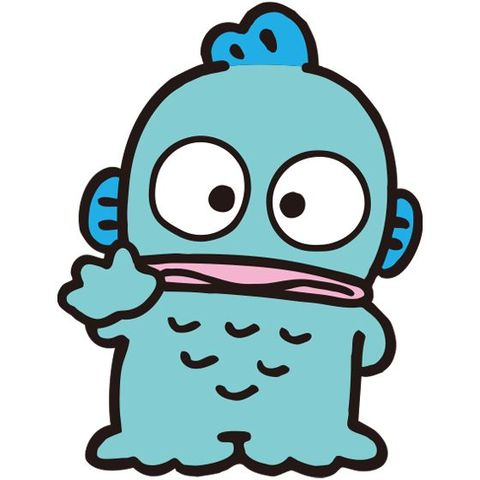
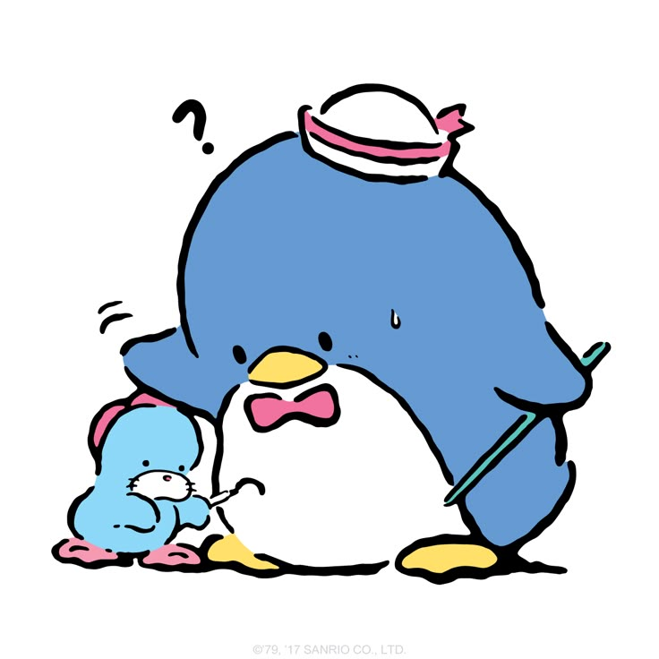
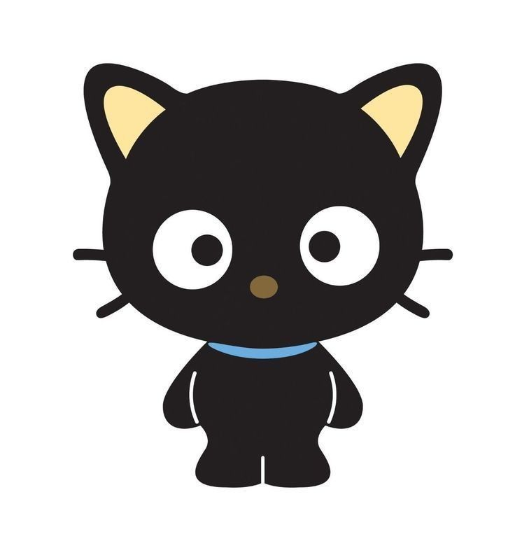
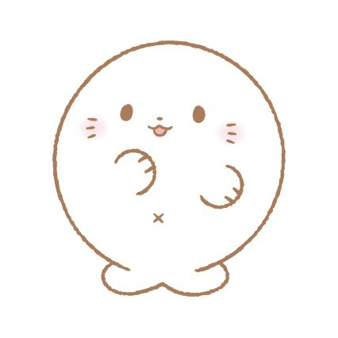

✨ Personajes Sanrio poco conocidos ✨
Existen personajes de Sanrio menos famosos pero igual de adorables. ¡Conócelos aquí! 🩷

Hangyodon 🐟
Un pez que sueña con ser héroe. Tímido pero gracioso. Su mejor amiga es Sayuri, un pulpo.

Tuxedosam 🐧
Un pingüino elegante con más de 365 moños. Vive en Ice Island con su hermano Tam.

Chococat 🐱
Gato inteligente con nariz de chocolate. Sus bigotes detectan información como un radar.

Ajimaru 🦭
Una foquita tímida y adorable. Es tranquila, se mueve lento y siempre busca estar calientita.
Es muy lindaaa
🔙 Volver a la página principal